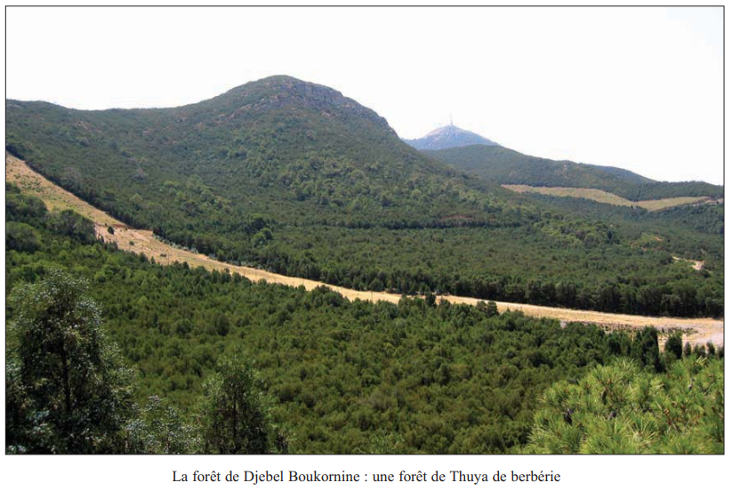
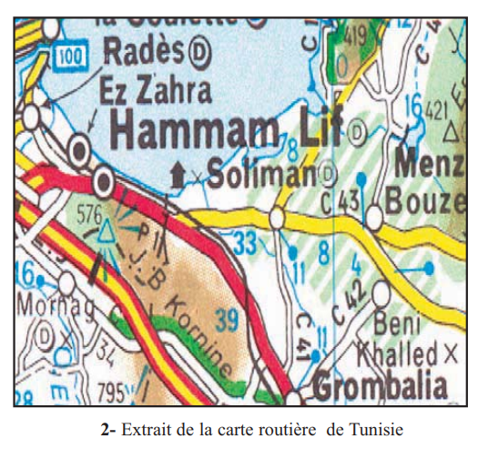
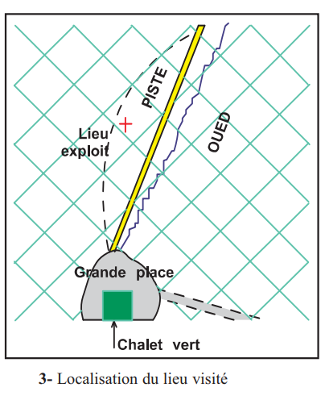
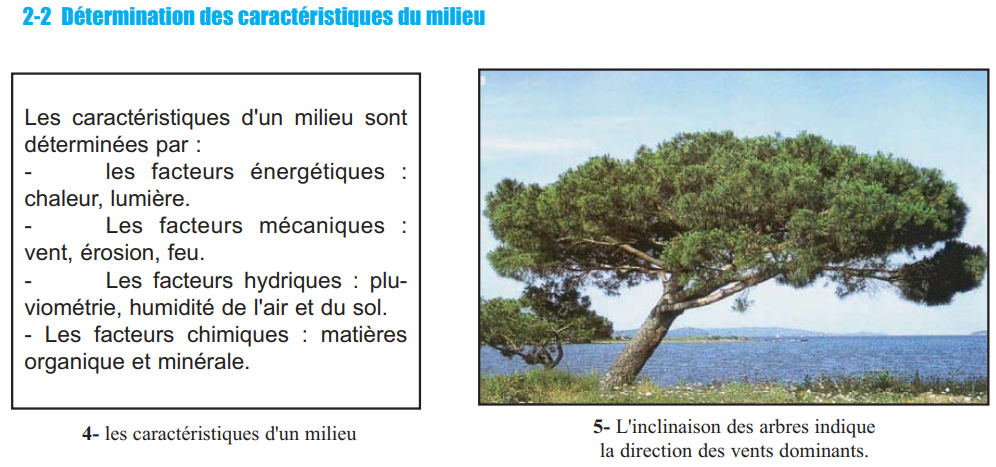
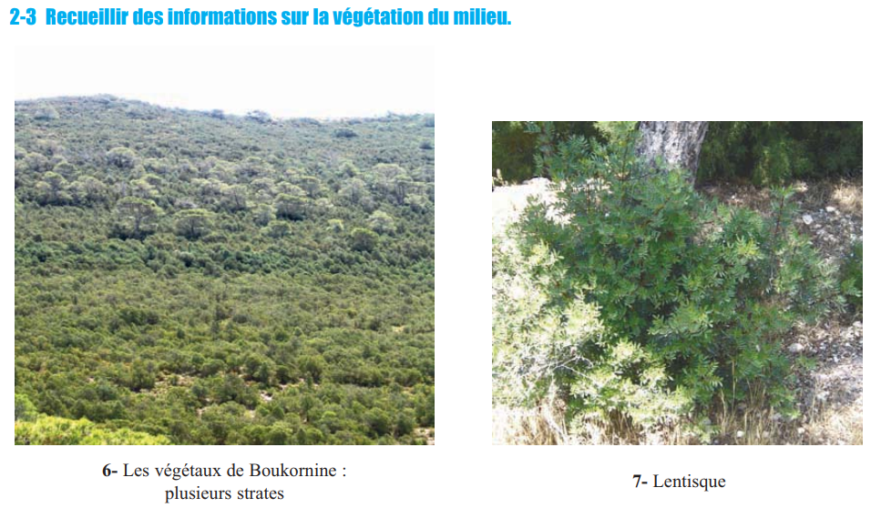
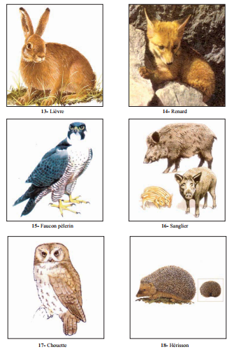
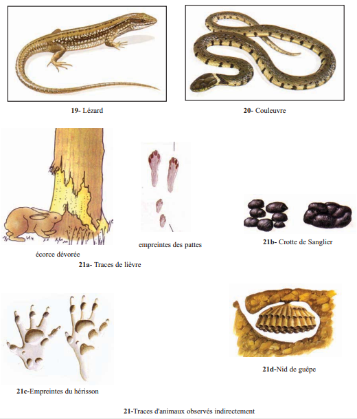
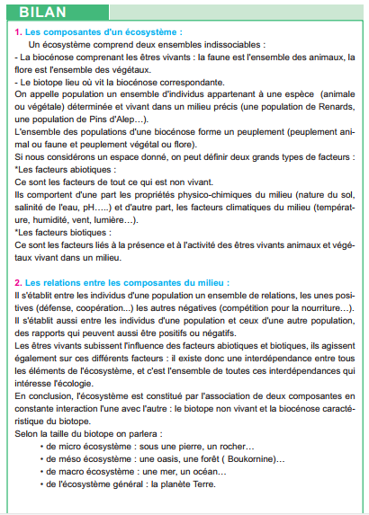

🎯 Pourquoi ce chapitre ? — Objectifs du programme
Selon le programme officiel tunisien (Thème 2 — Gestion rationnelle des écosystèmes), ce chapitre vise à :
- Identifier les composantes de l'écosystème et leurs interactions.
- Réaliser une sortie écologique dans un milieu local pour dégager les notions de biotope, biocénose, population et peuplement.
- Identifier les relations entre les composantes du milieu.
🔗 Ce chapitre introduit le vocabulaire fondamental de l'écologie. Il est le socle de tout le Thème 2 : adaptation (Ch.2), répartition des végétaux (Ch.3), relations trophiques (Ch.4) et développement durable (Ch.5).
📚 Préacquis
- Un milieu de vie = deux composantes : les êtres vivants (ensemble vivant) et le lieu où ils vivent (ensemble non vivant).
- Différentes relations s'établissent entre êtres vivants d'un même milieu : alimentaires, reproduction, défense du territoire.
- Une chaîne alimentaire relie des êtres vivants par des relations de nutrition : plante → herbivore → carnivore.
- Le premier maillon d'une chaîne alimentaire est toujours une plante verte autotrophe.
- Les êtres vivants sont adaptés aux conditions de leur milieu (climat, sol, topographie).
- La répartition des êtres vivants dépend des conditions écologiques de leur milieu.

❓ 2 Questions directrices
- Quelles sont les composantes d'un milieu naturel ?
- Quelles sont les interactions entre les composantes de ce milieu ?
🧠 Comprendre avant de mémoriser
Ce chapitre introduit le vocabulaire fondamental de l'écologie à partir d'un exemple concret : la forêt de Boukornine. La logique est simple : Écosystème = Biotope + Biocénose en constante interaction. Tout le reste (facteurs abiotiques/biotiques, population, peuplement, échelles) découle de cette équation de base.
Clique sur chaque notion pour explorer · Pièges classiques CAPES et connexions révélés
🌿 La Biocénose — les êtres vivants du milieu
| Terme | Définition | Exemple Boukornine |
|---|---|---|
| Biocénose | Ensemble de tous les êtres vivants d'un écosystème | Thuya + Lentisque + Renard + Faucon… |
| Faune | Ensemble des animaux (peuplement animal) | Renard, Sanglier, Lièvre, Faucon pèlerin, Chouette, Hérisson |
| Flore | Ensemble des végétaux (peuplement végétal) | Thuya de berbérie, Lentisque, Romarin, Bruyère, Alfa |
| Population | Ensemble d'individus de la même espèce dans un milieu précis | Population de Renards de Boukornine |
| Peuplement | Ensemble de toutes les populations d'une biocénose | Toutes les espèces animales + végétales de Boukornine |
🪨 Le Biotope — le milieu non vivant
Le biotope est défini par l'ensemble de ses facteurs abiotiques (= non vivants).
| Type de facteur | Facteurs | Instrument de mesure |
|---|---|---|
| Physico-chimiques | Nature du sol (calcaire, argile, sable) · pH · Salinité de l'eau | HCl (calcaire) · Pissette (argile) · pH-mètre |
| Climatiques | Température · Humidité · Pluviométrie · Luminosité · Vent | Thermomètre · Hygromètre · Pluviomètre · Luxmètre · Boussole |
| Mécaniques | Vent · Érosion · Feu | Observation directe (inclinaison des arbres → direction vent) |
🔄 Les Interactions — facteurs biotiques et interdépendance
Relations intra-population
| Type | Signe | Exemple |
|---|---|---|
| Coopération | +/+ | Meute de Renards à la chasse |
| Compétition | −/− | Compétition pour la nourriture (Sangliers) |
| Reproduction | +/+ | Accouplement saisonnier |
Relations inter-populations
| Type | Signe | Exemple Boukornine |
|---|---|---|
| Prédation | +/− | Faucon pèlerin → Lièvre |
| Herbivorie | +/− | Sanglier → Thuya (écorce) |
| Mutualisme | +/+ | Abeille → Fleur (pollinisation) |
Interdépendance : Les êtres vivants subissent l'influence des facteurs abiotiques ET agissent sur ces facteurs. Ex : les arbres modifient le microclimat (ombre, humidité du sol). C'est l'ensemble de ces interdépendances qui constitue l'écologie.
⚠️ 3 Pièges classiques CAPES
🔗 Connexions avec le manuel — Thème 2
Les facteurs abiotiques du biotope imposent des adaptations aux êtres vivants de la biocénose.
Les facteurs abiotiques expliquent la répartition géographique des végétaux en Tunisie.
Les relations trophiques introduites ici seront approfondies en Ch.4.
Boukornine est un Parc national depuis 1987 — exemple de gestion rationnelle d'un méso-écosystème.
💭 Questions de réflexion


1. Présentation du milieu
| Caractéristique | Données |
|---|---|
| Superficie | 1 939 hectares |
| Altitude | 10 à 576 mètres |
| Exposition | Flancs Nord ET Sud de la montagne |
| Statut | Parc national depuis 1987 |
| Type | Méso-écosystème forestier méditerranéen |
| Espèce dominante | Thuya de berbérie (Tetraclinis articulata) |


2. Détermination des facteurs abiotiques (Biotope)
| Facteur mesuré | Instrument utilisé | Ce qu'on détermine |
|---|---|---|
| Température | Thermomètre | °C à l'ombre, au soleil, à différentes altitudes |
| Humidité de l'air | Hygromètre | % d'humidité relative |
| Luminosité | Luxmètre | Lux (éclairement) |
| Pression atmosphérique | Baromètre | hPa |
| Nature du sol : calcaire ? | Acide chlorhydrique (HCl) | Effervescence → présence de CaCO₃ |
| Nature du sol : argile ? | Pissette d'eau | Sol plastique au toucher → argile |
| Direction du vent | Boussole + observation | Inclinaison des arbres = direction vents dominants |
| Pluviométrie | Carte pluviométrique | mm/an selon la région |


3. La flore de Boukornine — strates végétales
| Strate | Hauteur | Végétaux | Particularités |
|---|---|---|---|
| Arborescente | 5–10 m | Thuya de berbérie | Espèce dominante, feuilles persistantes |
| Arbustive | 1–3 m | Lentisque, Calycotome soyeux, Bruyère multiflore | Mi-ombre sous les arbres |
| Herbacée | 0–50 cm | Romarin, Alfa, Cyclamen de perse | Sol calcaire, pleine lumière ou ombre |
4. La faune de Boukornine — observations directes et indirectes
| Animal | Mode d'observation | Indices indirects | Régime alimentaire |
|---|---|---|---|
| Renard | Directe + indirecte | Empreintes de pattes | Omnivore (carnivore principalement) |
| Sanglier | Indirecte | Crottes + écorce dévorée + empreintes | Omnivore |
| Lièvre | Directe + indirecte | Traces de saut caractéristiques | Herbivore |
| Faucon pèlerin | Directe (jumelles) | Pelotes de réjection | Carnivore (oiseaux, petits mammifères) |
| Chouette | Indirecte (chant nocturne) | Pelotes de réjection | Carnivore (rongeurs) |
| Hérisson | Indirecte | Empreintes caractéristiques | Insectivore / omnivore |
5. Bilan de la sortie — Schéma de l'écosystème

📌 Retenons — Notion d'écosystème (objectifs du programme)
1Un écosystème comprend deux ensembles indissociables : la (ensemble des êtres vivants) et le (lieu où vit la biocénose). Ces deux composantes sont en .
2La biocénose comprend la (ensemble des animaux) et la (ensemble des végétaux). Une est un ensemble d'individus appartenant à la même vivant dans un milieu précis. L'ensemble des populations forme le .
3Les facteurs sont les facteurs non vivants du milieu : propriétés physico-chimiques (nature du sol, salinité, …) et facteurs climatiques (température, , vent, lumière). Les facteurs sont liés à la présence et à l'activité des êtres vivants.
4Selon la taille du biotope : sous une pierre = ; la forêt de Boukornine = ; la mer Méditerranée = ; la planète Terre = .
🃏 Flashcards — Vocabulaire clé du chapitre
✏️ QCM — Manuel (p.91) + Questions complémentaires
Vérification question par question. Cliquez sur "Vérifier" après chaque réponse. Les questions du manuel sont en cases à cocher (plusieurs réponses possibles).
📋 QCM du manuel — Page 91
📝 QCM complémentaires — Approfondissement
📝 Exercices interactifs
🌊 Ex.1 — Analyser le Parc Ichkeul (exercice 2, p.92)
| Élément observé | Composante de l'écosystème | Type |
|---|---|---|
| Olivier sauvage, Caroubier, Romarin | ||
| Lac (eau saumâtre) | ||
| Canard siffleur mange le potamot | ||
| Potamot absent en eau salée | ||
| Versant Nord — Câprier, Asperge |
📝 Ex.2 — Compléter le texte sur la notion d'écosystème
La forêt de Boukornine est un . Elle comprend un (sol calcaire, climat méditerranéen) et une (Thuya, Lentisque, Renard, Sanglier). L'ensemble des Renards de la forêt constitue une . La et la ensemble forment le . Les relations de prédation entre Faucon et Lièvre constituent des facteurs . La température et la salinité du sol sont des facteurs .
🔢 Ex.3 — Remettre dans l'ordre les étapes d'une sortie sur le terrain
Ordonner les étapes logiques d'une étude de milieu :